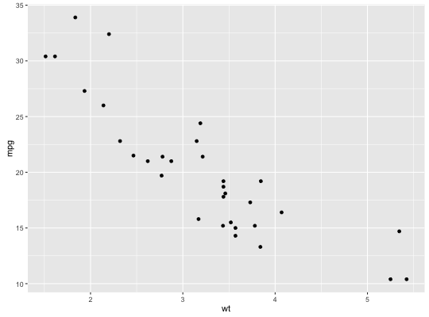

Points, as for a scatterplot
Usage
geom_point(mapping = NULL, data = NULL, stat = "identity", position = "identity", na.rm = FALSE, show.legend = NA, inherit.aes = TRUE, ...)
Arguments
- mapping
- Set of aesthetic mappings created by
aesoraes_. If specified andinherit.aes = TRUE(the default), is combined with the default mapping at the top level of the plot. You only need to supplymappingif there isn't a mapping defined for the plot. - data
- A data frame. If specified, overrides the default data frame defined at the top level of the plot.
- stat
- The statistical transformation to use on the data for this layer, as a string.
- position
- Position adjustment, either as a string, or the result of a call to a position adjustment function.
- na.rm
- If
FALSE(the default), removes missing values with a warning. IfTRUEsilently removes missing values. - show.legend
- logical. Should this layer be included in the legends?
NA, the default, includes if any aesthetics are mapped.FALSEnever includes, andTRUEalways includes. - inherit.aes
- If
FALSE, overrides the default aesthetics, rather than combining with them. This is most useful for helper functions that define both data and aesthetics and shouldn't inherit behaviour from the default plot specification, e.g.borders. - ...
- other arguments passed on to
layer. There are three types of arguments you can use here:- Aesthetics: to set an aesthetic to a fixed value, like
color = "red"orsize = 3. - Other arguments to the layer, for example you override the
default
statassociated with the layer. - Other arguments passed on to the stat.
- Aesthetics: to set an aesthetic to a fixed value, like
Description
The point geom is used to create scatterplots.
Details
The scatterplot is useful for displaying the relationship between two
continuous variables, although it can also be used with one continuous
and one categorical variable, or two categorical variables. See
geom_jitter for possibilities.
The bubblechart is a scatterplot with a third variable mapped to the size of points. There are no special names for scatterplots where another variable is mapped to point shape or colour, however.
The biggest potential problem with a scatterplot is overplotting: whenever
you have more than a few points, points may be plotted on top of one
another. This can severely distort the visual appearance of the plot.
There is no one solution to this problem, but there are some techniques
that can help. You can add additional information with
stat_smooth, stat_quantile or
stat_density2d. If you have few unique x values,
geom_boxplot may also be useful. Alternatively, you can
summarise the number of points at each location and display that in some
way, using stat_sum. Another technique is to use transparent
points, e.g. geom_point(alpha = 0.05).
Aesthetics
geom_point understands the following aesthetics (required aesthetics are in bold):
-
x -
y -
alpha -
colour -
fill -
shape -
size -
stroke
Examples
p <- ggplot(mtcars, aes(wt, mpg)) p + geom_point()
# Add aesthetic mappings p + geom_point(aes(colour = factor(cyl)))
p + geom_point(aes(shape = factor(cyl)))p + geom_point(aes(size = qsec))# Change scales p + geom_point(aes(colour = cyl)) + scale_colour_gradient(low = "blue")p + geom_point(aes(shape = factor(cyl))) + scale_shape(solid = FALSE)# Set aesthetics to fixed value ggplot(mtcars, aes(wt, mpg)) + geom_point(colour = "red", size = 3)# Varying alpha is useful for large datasets d <- ggplot(diamonds, aes(carat, price)) d + geom_point(alpha = 1/10)d + geom_point(alpha = 1/20)
d + geom_point(alpha = 1/100)# For shapes that have a border (like 21), you can colour the inside and # outside separately. Use the stroke aesthetic to modify the width of the # border ggplot(mtcars, aes(wt, mpg)) + geom_point(shape = 21, colour = "black", fill = "white", size = 5, stroke = 5)# You can create interesting shapes by layering multiple points of # different sizes p <- ggplot(mtcars, aes(mpg, wt, shape = factor(cyl))) p + geom_point(aes(colour = factor(cyl)), size = 4) + geom_point(colour = "grey90", size = 1.5)p + geom_point(colour = "black", size = 4.5) + geom_point(colour = "pink", size = 4) + geom_point(aes(shape = factor(cyl)))
# These extra layers don't usually appear in the legend, but we can # force their inclusion p + geom_point(colour = "black", size = 4.5, show.legend = TRUE) + geom_point(colour = "pink", size = 4, show.legend = TRUE) + geom_point(aes(shape = factor(cyl)))# geom_point warns when missing values have been dropped from the data set # and not plotted, you can turn this off by setting na.rm = TRUE mtcars2 <- transform(mtcars, mpg = ifelse(runif(32) < 0.2, NA, mpg)) ggplot(mtcars2, aes(wt, mpg)) + geom_point()Warning message: Removed 6 rows containing missing values (geom_point).
ggplot(mtcars2, aes(wt, mpg)) + geom_point(na.rm = TRUE)


See also
scale_size to see scale area of points, instead of
radius, geom_jitter to jitter points to reduce (mild)
overplotting